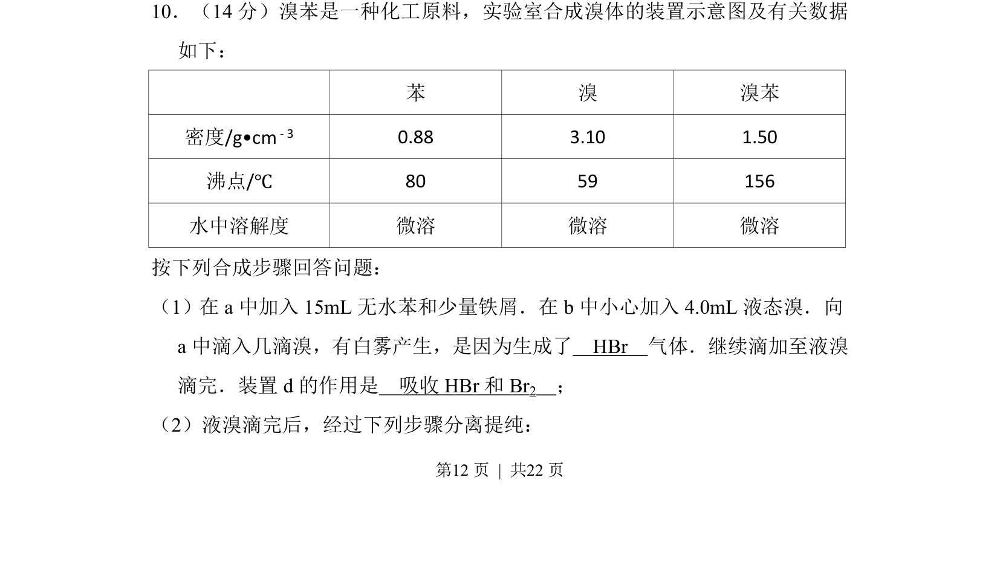
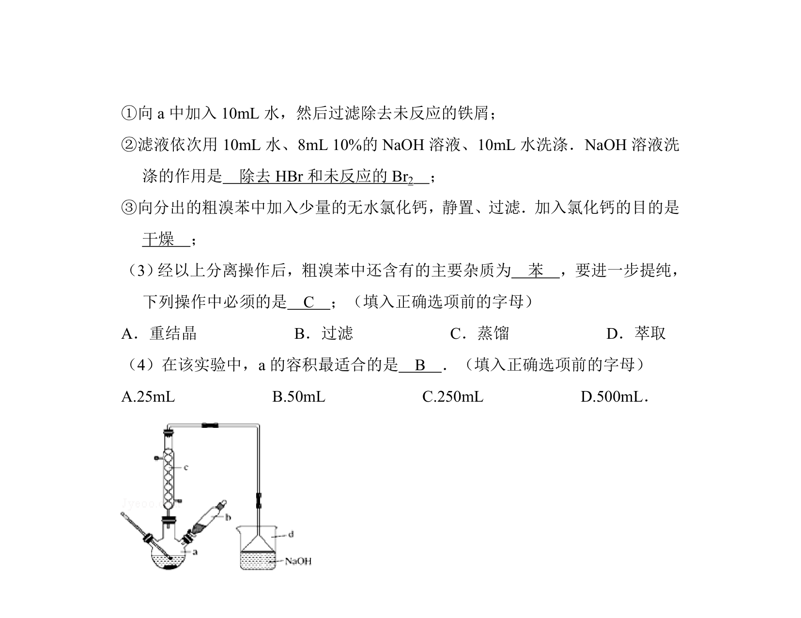
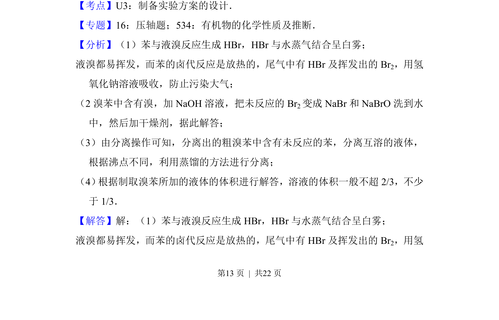
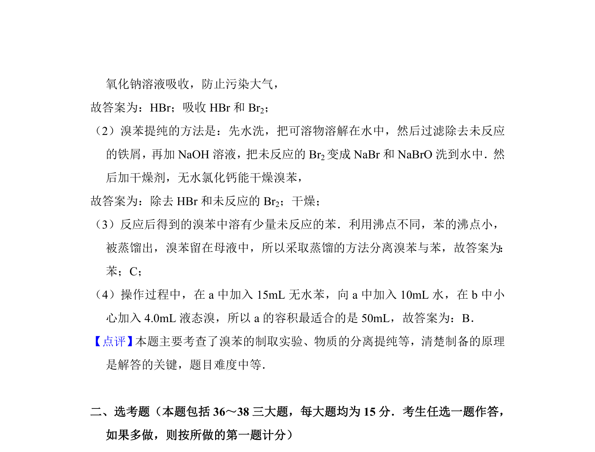

考点：HBr气体生成 尾气吸收 分液与干燥 蒸馏提纯


本题为化学实验题，考查溴苯制备原理、装置作用及分离提纯操作。


📄 原 PDF 第 12 页：
素材/真题/吉林/2008-2024·（吉林）化学高考真题/2012年高考化学试卷（新课标）（解析卷）.pdf
10．（14分）溴苯是一种化工原料，实验室合成溴体的装置示意图及有关数据 如下： 苯 溴 溴苯 密度/g•cm﹣3 0.88 3.10 1.50 沸点/℃ 80 59 156 水中溶解度 微溶 微溶 微溶 按下列合成步骤回答问题： （1）在a中加入15mL无水苯和少量铁屑．在b中小心加入4.0mL液态溴．向 a中滴入几滴溴，有白雾产生，是因为生成了 HBr 气体．继续滴加至液溴 滴完．装置d的作用是 吸收HBr和Br 2 ； （2）液溴滴完后，经过下列步骤分离提纯：